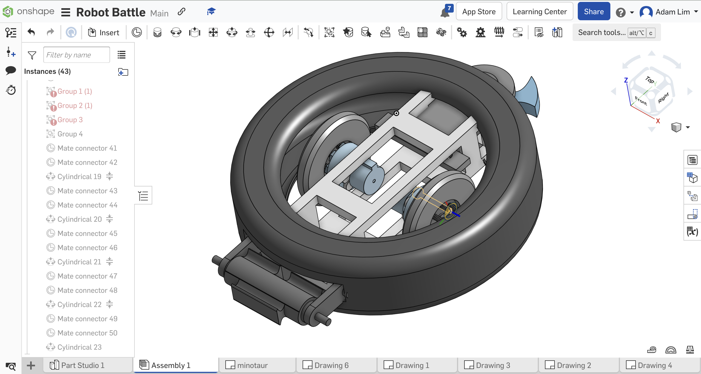

I am currently a final year computer science student at Sunway University, Malaysia, and passionate about computer science and robotics. I'm always curious to know how things work as it can allow me to connect the dots in creating new things. I believe that knowledge has the power to solve many problems, is just how we apply it that matters.
While studying, I am also working on various robotics projects and working with other like-minded individuals to create and organise events that allow more people to learn and gain extra knowledge. In my free time, I also watch movies and train regularly as a avid triathlete.
I'm always open to collaborations or new opportunities. Feel free to reach out to me at aedamjung@gmail.com or send me a message if you're interested :)
What I do
Robotics
I have experience working on a range of robotics projects, including combat robots,
quadruped designs, and Robocon. I am actively learning more about ROS, Arduino, Python,
machine vision, and object detection. I aim to apply these programming skills to enhance
my software development, as they are closely related.
Software Development
I also develop web applications and websites. During my internship
in app development, I learned to use Flutter and created a film production
management application. This app allows managers to store and access contact
information for everyone involved in the production, as well as schedule
meetings and view all schedules and availabilities.
Skills
CAD
CAD Design: Fusion 360, SolidWorks – 3D modeling for combat and the quadruped robot.
Programming
Python, C++, ROS – Algorithms and autonomous robot and depth camera.

3D Printing
Design and prototyping for robotics components
Machine Learning
TensorFlow, OpenCV – Object detection for robocon.
Daniel lewis
Hello testing
Languages
Resume
Education
Sunway University & Lancaster University
January 2022 - January 2025
Candidate for B.S. (Hons) in Computer Science. Created robotic projects including a robotic dog, an autonomous robot, and a combat robot for various competitions. Relevant coursework includes Artificial Intelligence, Computer Vision, Computational Intelligence, and Distributed Systems.
Dean's List Award
Sunway College
January 2021 - January 2022
Completed the Foundation in Arts program with a GPA of 3.58. Engaged in extracurricular activities including the Sunway Futsal Club, Sunway Athletics, and Sunway Tech Club. Relevant coursework includes Business, Computer Science, and Microeconomics.
Experience
Sunway Robotics Club
August 2024 - Present
Head of Event Management
Oversee and organize events, ensuring they run smoothly and resolving conflicts promptly. Successfully organized workshops such as Arduino and 3D printing, and developed a sustainable education system for future event managers.
Alva Productions
January 2024 - April 2024
Mobile Applications Developer - Hybrid
Developed a mobile application for film production directors to manage team contacts and personal information. Led the team, ensuring smooth communication and code integration while utilizing Flutter and Firebase.
Urock Team
January 2023 - August 2024
Lead Team Engineer
Led the design and development of a four-legged robot for racing, managing the electronics to control 12 high-torque servos through ROS communication with OpenCR and Jetson Nano. Programmed in Arduino for data communication.
Combat Robot Team
January 2023 - August 2024
Team Engineer
Contributed to the CAD design of both a tire-based robot and a drum spinner/ramp robot. Responsible for assembling and repairing robots, ensuring peak performance during competitions.
Robocon Team 2024
January 2023 - August 2024
Team Software Engineer
Developed both semi- and fully autonomous robots. Programmed robot movements for gripping and placing objects, and created a machine learning model for object detection during competitions.